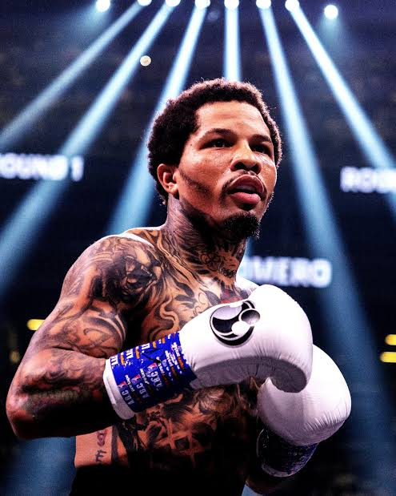
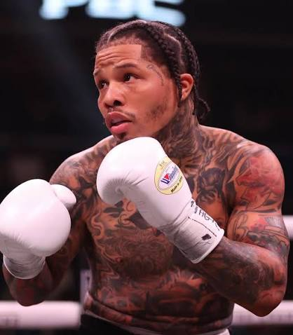
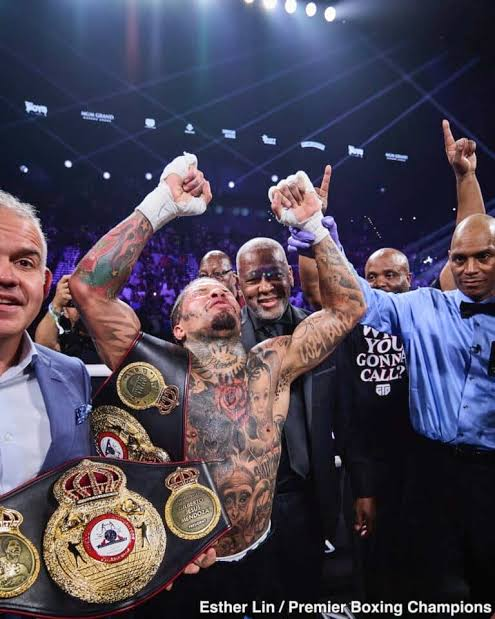
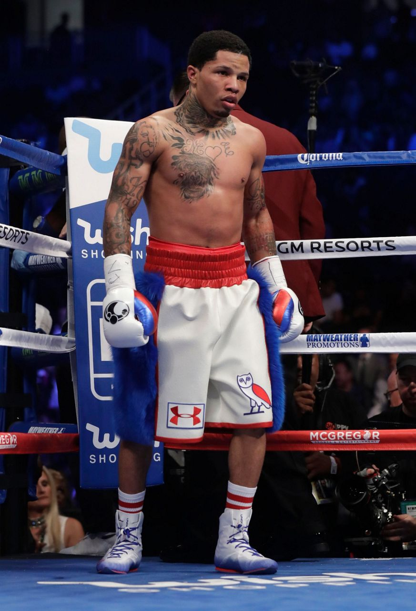

Gervonta “Tank” Davis
The Knockout King of Baltimore
“Small in stature, massive in impact — a fighter who turned determination into greatness.”
Bertubuh relatif kecil, tetapi berpengaruh besar: petarung yang mengubah tekad menjadi prestasi.
Kenali lebih dekat
Tentang
Gervonta Bryant Davis adalah petinju profesional asal Baltimore, Maryland, Amerika Serikat, yang lahir pada 7 November 1994. Ia dikenal dengan julukan “Tank” karena kekuatan pukulan, kecepatan, akurasi, dan kemampuannya membaca gerakan lawan.
Davis mulai berlatih tinju sejak kecil di lingkungan Sandtown-Winchester, Baltimore. Lewat kerja keras dan latihan yang konsisten, ia berkembang dari petinju amatir menjadi juara dunia profesional di beberapa kelas berat badan.
- Nama lengkap
- Gervonta Bryant Davis
- Julukan
- Tank
- Lahir
- 7 November 1994, Baltimore
- Kebangsaan
- Amerika Serikat
- Profesi
- Petinju profesional
- Gaya
- Southpaw (kidal)
- Tinggi
- Sekitar 166 cm
- Kelas utama
- Lightweight
- Pelatih
- Calvin Ford
Perjalanan hidup
Masa kecil
Lahir dan dibesarkan di Baltimore. Mulai berlatih tinju sekitar usia 7 tahun dan mengasah kemampuan di Upton Boxing Center. Ia bersekolah di Digital Harbor High School, lalu menyelesaikan pendidikan menengah lewat program GED.
Masa amatir
Mengembangkan kemampuan dan mengikuti berbagai kompetisi nasional, termasuk menjuarai National Golden Gloves pada 2012.
Awal profesional
Debut profesional pada Februari 2013, saat ia berusia 18 tahun.
Juara dunia
Meraih gelar juara dunia pertamanya pada Januari 2017 setelah mengalahkan José Pedraza.
Yang membuatnya berbeda
- Punching powerPukulan keras yang sering berujung kemenangan knockout.
- Speed and accuracyTangan cepat dengan pukulan yang tepat sasaran.
- Counter punchingMemanfaatkan celah saat lawan menyerang.
- Southpaw stylePosisi kidal memberi sudut serangan yang berbeda.
- Ring intelligenceMembaca gerakan lawan dan memilih waktu menyerang.
Pencapaian
| 2012 | Juara National Golden Gloves |
| 2013 | Memulai karier profesional |
| 2017 | Juara dunia IBF Super Featherweight |
| 2018 | Juara dunia WBA Super Featherweight |
| 2019 | Meraih gelar WBA Lightweight |
| 2020 | Mengalahkan Leo Santa Cruz |
| 2021 | Mengalahkan Mario Barrios |
| 2022 | Mengalahkan Isaac Cruz |
| 2023 | Mengalahkan Ryan Garcia |
| 2024 | Mengalahkan Frank Martin |
| 2025 | Seri melawan Lamont Roach |
Laga paling dikenal
Statistik karier profesional
Data per 18 November 2026. Catatan terakhir adalah laga melawan Lamont Roach pada 1 Maret 2025. Angka dapat berubah setelah pertandingan berikutnya.
Galeri



Sumber foto: (isi nama fotografer atau media sumbernya di sini).